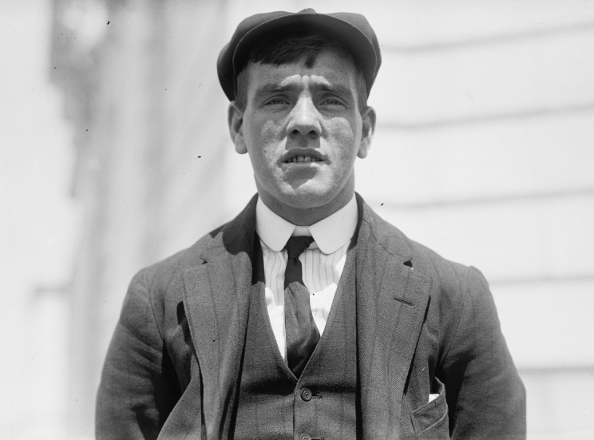

Chapter 6
The Lookout’s Cry
Frederick Fleet stood in the crow’s nest, ninety-five feet above the forward well deck, and saw nothing. The night had no moon. The sea had no swell. The horizon, where black water met black sky, had vanished sometime after sunset. Fleet and his watchmate, Reginald Lee, had been aloft since ten o’clock. They had another hour to go. The cold came through their coats and settled in their fingers. Fleet rubbed his hands together and squinted into the dark. Survivor Colonel Archibald Gracie later wrote that ‘the sea was like glass, so smooth that the stars were clearly reflected’—a condition now known to be a sign of nearby pack ice.
The Titanic was four days out of Southampton, carrying more than 2, 200 people toward New York. She was the largest liner in the world. Her engines drove her through the water at better than twenty-one knots. Down on the bridge, First Officer William Murdoch had taken the watch at ten. He knew about the ice. He had seen the warnings. No one had told him to slow down.
Fleet and Lee had no binoculars. The glasses that should have been in the crow’s nest had disappeared sometime after the ship left Belfast. No one could find them. The lookouts had asked. The answer came back: there were none to be had. So they used their eyes.
A calm sea on a dark night was the worst condition for spotting ice. The absence of wind meant no waves broke against an iceberg’s base. No white spray caught the starlight. The berg would appear as a black mass against a black sky, visible only when close. How close depended on the observer, the light, and the shape of the ice itself.
At 11:30, Fleet scanned the horizon. He saw nothing. Lee stood beside him, looking in a different direction. They had been told to watch for growlers—low, jagged fragments of ice that rode low in the water—and for the larger bergs that rose like islands from the sea. The warnings had mentioned both.
The crow’s nest was a small platform enclosed by a rail. A bell hung within reach. A telephone connected the nest to the bridge. The lookouts had instructions: ring the bell three times if they saw something dead ahead. Then pick up the telephone and report what they saw.
Fleet was twenty-four years old and had been at sea since he was twelve. He knew the North Atlantic. He had seen ice before. But he had never seen a night like this.
Below him, the ship’s decks were quiet. Most passengers had gone to their cabins. The restaurants had closed. The smoking rooms had emptied. A few stewards moved through the corridors, turning down lights. The band had stopped playing an hour earlier. The Titanic steamed westward, her lights blazing, her funnels smoking, her propellers churning the calm sea into a white wake that stretched behind her into the dark.
On the bridge, Sixth Officer James Moody stood at the port wing. Fourth Officer Joseph Boxhall had gone below to check the passenger decks. Murdoch stood at the starboard wing, watching the horizon. Quartermaster Robert Hichens stood at the wheel. The ship was on course, steering west by north. The log showed her speed at the usual twenty-one knots.
At 11:33, Fleet shifted his weight. His feet were cold, his eyes ached from squinting. He looked to port, then to starboard, then dead ahead. Nothing.
The warnings had accumulated all day. The Baltic had reported ice. The Amerika had reported ice. The Californian had reported ice, stopped for the night, surrounded by it. The Caronia had reported bergs and field ice. The Mesaba had sent a message that placed ice directly in the Titanic’s path. That message had never reached the bridge. It lay in the wireless room, unposted, unread by the officers who needed it most.
Murdoch knew some of this. He had seen the Baltic’s warning. He had been told about ice ahead. But the warnings gave positions, not precise locations. Ice drifted. A berg reported at one latitude and longitude might be miles away by the time the ship passed through. The only way to avoid it was to see it in time.
At 11:35, Fleet rubbed his eyes. The cold made them water. He blinked and looked again.
The calm sea was a trick. In rough weather, waves would break against an iceberg’s base, throwing up white foam that caught any available light. On a flat-calm night, the water met the ice in silence. The berg sat in the water like a shadow, invisible until it blocked the stars or rose against the horizon.
Fleet had no horizon to work with. The sky and the sea had merged into one undifferentiated black. He could only look for something that interrupted the pattern, a shape where no shape should be.
At 11:38, Lee shifted beside him. The two men had not spoken much during their watch. There was nothing to say. They watched, and they waited.
The Titanic covered thirty-eight feet every second. At that speed, an object a quarter-mile ahead would be reached in less than thirty seconds. If the lookouts saw something at half a mile, they had perhaps forty seconds before the ship reached it. If they saw it at a quarter-mile, they had twenty. The margin for error was small. The margin for reaction was smaller.

At 11:39, Fleet saw it.
A black mass. Directly ahead. Close.
He grabbed the lanyard of the bell and pulled it three times. The clapper struck—ding, ding, ding. The sound rang out across the empty decks. Then he reached for the telephone receiver on the wall of the crow’s nest and cranked the handle. The line connected to the bridge.
Down on the bridge, the telephone rang. Sixth Officer Moody picked up the receiver.
“What do you see?” Moody asked.
“Iceberg, right ahead,” Fleet said.
Moody repeated the words to Murdoch. “Iceberg, right ahead.”
Murdoch did not hesitate. He moved to the telegraph stand and rang the handle to “Full Astern.” The order went to the engine room. Then he turned to the wheel and called out his course correction.
“Hard-a-starboard,” Murdoch said.
The order was counterintuitive. “Hard-a-starboard” meant turn the wheel to the right, which would swing the ship’s bow to the left. The convention dated back to the days of tiller steering, and it persisted in the language of the sea. Murdoch was ordering the ship to turn to port, away from the berg.
Quartermaster Hichens spun the wheel. The Titanic began to turn. Her bow swung left. Her stern swung right. The ship heeled slightly as the rudder bit into the water.
Fleet watched from the crow’s nest. The berg was coming closer. He could see its shape now—a black pyramid rising from the water, its surface catching the ship’s lights. The collision was seconds away.
Murdoch watched from the starboard wing. He saw the berg emerge from the dark. He knew the ship was turning. He knew the engines were reversing. He did not know if it would be enough.
The berg passed along the starboard side. The ship’s turn had pulled her bow away from the ice. But the turn also swung her stern toward it. As the forward sections cleared, the aft sections approached. The iceberg scraped against the hull.
The sound was not loud. Those who heard it described it as a grinding, a rumbling, a vibration that ran through the ship. It lasted a few seconds. Then it stopped.
Fleet watched the berg slide past. The ship had missed the worst of it. But she had not missed it entirely.
At 11:40, the Titanic struck the iceberg. The collision was a glancing blow. The berg had contacted the hull along a length of perhaps two hundred feet. The plates had buckled. Rivets had popped. Seams had opened. The sea was coming in.
The lookouts had done their job. They had spotted the berg and called it in. The officer on the bridge had done his job. He had ordered the turn and the reversal of the engines. The quartermaster had done his job. He had turned the wheel. The ship had responded.
But the time between sighting and impact had been less than forty seconds. The ship had been moving too fast. The night had been too dark. The sea had been too calm. The lookouts had had no glasses. The warnings had been seen as advisories, not orders. The speed had been kept.
The collision was not a single failure. It was a cascade.
In the wireless room, Harold Bride had been preparing for bed. The shock threw him from his bunk. Senior operator John Phillips was still at the key, working a backlog of messages. The lights flickered. The ship steadied. Bride asked what had happened. Phillips did not know.
Down in the boiler rooms, the stokers felt the impact. Water began to enter through vents and openings. The firemen ran for the ladders. Some made it out. Others did not.
On the bridge, Murdoch rang the telegraph to “Stop.” The Titanic’s engines slowed and fell silent. The ship drifted, her forward momentum dying in the calm water. Captain Edward Smith came out from his cabin, which was directly behind the bridge. He had felt the impact. He wanted to know what had happened.
Murdoch explained. He had seen the berg. He had ordered hard-a-starboard. He had ordered the engines full astern. The ship had turned, but not enough. The berg had scraped the starboard side.
Smith asked if the watertight doors had been closed. They had. Murdoch had thrown the switch that dropped the doors automatically. The ship was divided into sixteen compartments. The doors between them were sealed.
But the doors could not seal what had already been opened. The berg had damaged the hull below the waterline. The sea was entering the ship through rents in the steel plates.
Smith ordered Boxhall to inspect the damage. Boxhall went below, working his way forward through the ship. He found the mail room flooding. The mail carriers were already at work, hauling wet sacks up the stairs. Boxhall continued his inspection. He found water in the cargo holds. He found water in the boiler rooms.
He returned to the bridge and reported. The ship was taking on water. The extent was unclear. The rate was faster than the pumps could handle.
Smith went below himself. He saw the damage. He returned to the bridge and ordered the ship stopped. The Titanic sat in the water, her lights still blazing, her funnels still smoking, her passengers mostly asleep, unaware that anything had changed.
The time was 11:45. Five minutes had passed since the collision.
In the crow’s nest, Fleet and Lee waited for orders. None came. They had reported the berg. They had rung the bell. They had made the call. The rest was out of their hands.
The telephone line was still open. Moody had not hung up. Fleet could hear voices on the bridge, discussing what had happened. He could not make out the words.
The two lookouts stood in the cold and watched the berg recede behind the ship. It was a black shape against the black water, growing smaller as the ship drifted away. In a few minutes, it was gone.
The night was quiet again. The sea was calm. The stars shone down on a ship that was no longer whole.
The collision had been the result of decisions made long before Fleet saw the iceberg. The speed was a decision. The lack of binoculars was a decision. The treatment of ice warnings as advisories was a decision. Each decision had seemed reasonable at the time. The ship was large. The ship was new. The ship was unsinkable. The regulations required lifeboats for far fewer than the souls aboard. The Board of Trade had not updated its rules to account for vessels of this size. The White Star Line had not exceeded the minimum. The officers had not slowed down.
This confidence had carried the ship into the ice field at full speed. The lookouts had been given a task that required them to see the invisible. The officers had been given warnings that no one had integrated into a plan. The ship had been given a design that assumed the worst would never happen.
Now the worst had happened. The water was rising. The pumps were inadequate. The lifeboats were too few.
On the bridge, Smith ordered the boats uncovered. The order went out. Sailors and stewards began to work their way to the boat deck. The lifeboats, twenty in all, hung in their davits, waiting.
The time was 11:50. Ten minutes had passed since the collision.
The Titanic had been designed to stay afloat with any two compartments flooded. She could survive with three. She might survive with four. The berg had opened at least five. The water was entering faster than it could be contained. The bow was already settling.
Smith went to the wireless room. He told Phillips and Bride to prepare to send a distress signal. The code was CQD—Come Quick, Danger. The new code, SOS, was also available. Phillips began to tap out the message.
The time was midnight. The ship was sinking.
The lookouts had been relieved. Fleet and Lee climbed down from the crow’s nest. They made their way to the boat deck. They had done what they could. The rest was in other hands.
The night was clear. The stars were bright. The sea was flat. The temperature was falling. The water was cold enough to kill in minutes.
The Titanic sat in the Atlantic, four hundred miles south of the Grand Banks of Newfoundland. The nearest ship that had heard the warnings was the Californian, stopped for the night, surrounded by ice, her wireless operator asleep. The nearest ship that would hear the call was the Carpathia, fifty-eight miles away, steaming toward Gibraltar, her captain about to be awakened by a distress signal.
Later, the inquiries would examine every second of the collision. The British Wreck Commissioner’s inquiry, sitting in London from May to July 1912, would call Fleet and Lee to testify. The American inquiry, opening in New York on April 19, would summon the surviving officers. Each witness would give his account. Each lawyer would probe for contradiction. Each commissioner would weigh the evidence.
Fleet would testify that he had seen the iceberg when it was “black and close.” He would say he had rung the bell three times and telephoned the bridge. He would say the answer came back: “Thank you.” He would estimate the time between his call and the impact at “half a minute to a minute.” He would say the ship had turned to port while he watched.
Lee would testify that the berg had been “a dark mass” that “loomed up.” He would confirm the three bells. He would confirm the telephone call. He would say the berg had struck the ship on the starboard bow.
Boxhall would testify that he had heard Murdoch report to Smith: “I put her hard-a-starboard and I rang the telegraph ‘full speed astern,’ but she hit it.” Murdoch would not testify. He had gone down with the ship.
The inquiries would ask about the binoculars. Fleet would say they had asked for them in Belfast and been told there were none. The inquiries would ask about the speed. The officers would say the ship had been proceeding at her usual pace. The inquiries would ask about the warnings. The officers would say they had known ice was ahead, but they had not been given precise positions.
The American inquiry, under Senator William Alden Smith, would focus on the speed. Smith would ask why the ship had not slowed down. The British inquiry, under Lord Mersey, would focus on the lookouts. Mersey would ask why they had not seen the berg sooner.
Both inquiries would hear about the calm sea. Both would hear about the moonless night. Both would hear about the lack of binoculars. Both would hear about the warnings that had been received and the warnings that had not reached the bridge.
The witnesses would agree on the essential facts. The berg had been sighted at 11:40. The bell had been rung. The telephone had been used. Murdoch had ordered the turn. The ship had turned. The berg had scraped the hull. The damage had been done.
The disagreements would come on the margins. How far away was the berg when Fleet saw it? How long between the sighting and the impact? Did Murdoch order “hard-a-port” after the initial turn, a maneuver known as “porting around” the berg? The witnesses would contradict each other on these points. Fleet would say the berg was close. Lee would say it was closer. Boxhall would say he heard Murdoch order both turns. Other witnesses would remember only one.
The inquiries would sift the testimony and reach their conclusions. The British inquiry would find that the collision was due to the excessive speed at which the ship had been navigated. The American inquiry would find that the ship had been proceeding at full speed through a region of ice without adequate lookout.
Both inquiries would recommend changes. The Board of Trade would update its regulations. Lifeboats would be required for all souls aboard. Wireless watches would be required around the clock. Ice patrols would be established to track bergs in the North Atlantic.
But on the night of April 14, 1912, none of that had happened yet. There was only the ship, the ice, the water, and the cold.
Fleet and Lee stood on the boat deck and watched. The officers worked to understand the damage. The passengers slept, or woke, or wondered what had caused the shudder that ran through the ship.
The Titanic was four days into her maiden voyage. She had been the largest moving object ever built. She had been advertised as unsinkable. She had carried the richest and the poorest, the famous and the unknown, the hopeful and the resigned.
Now she was a ship taking on water in the middle of the Atlantic, her bow settling, her compartments flooding, her lights still blazing against the dark.
The lookouts had seen the iceberg at 11:40. They had reported it. The officer on the bridge had ordered the turn. The ship had not turned fast enough. The berg had scraped the hull. The plates had failed. The sea had come in.
The sequence had taken less than a minute. The consequences would take hours. The ship would sink. The boats would be lowered. The people would be separated. The survivors would be rescued. The dead would remain.
The collision had occurred. The water was entering the ship at a catastrophic rate, handing off an immediate and irreversible crisis requiring evacuation.